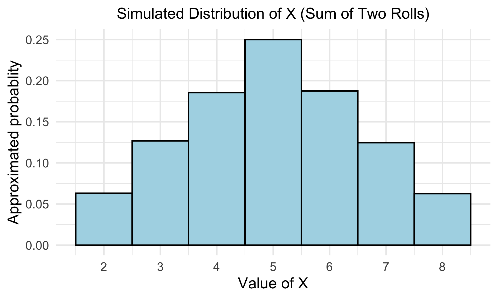

reps <- 100000
simulations <- replicate(reps, sample(x = 1:4, size = 2, replace = TRUE))Lesson 7: Probability Mass Functions (pmf’s)
Learning Objectives
- Identify a probability mass function (pmf) from past simulations
- Identify a binomial random variable and its parameters from a word problem
- Use R to calculate probabilities and simulate binomial random variables
Where are we?

Learning Objectives
- Identify a probability mass function (pmf) from past simulations
- Identify a binomial random variable and its parameters from a word problem
- Use R to calculate probabilities and simulate binomial random variables
From Lesson 2: Types of random variables
There are two types of random variables:
Discrete random variables (RVs): the set of possible values is either finite or can be put into a countably infinite list
You could theoretically list the specific possible outcomes that the variable can take
If you sum the rolls of three dice, you must get a whole number. For example, you can’t get any number between 3 and 4.
Continuous random variables (RVs): take on values from continuous intervals, or unions of continuous intervals
Variable takes on a range of values, but there are infinitely possible values within the range
If you keep track of the time you sleep, you can sleep for 8 hours or 7.9 hours or 7.99 hours or 7.999 hours …
- Discrete random variables (RVs) are a little easier to simulate right now
- We will only do discrete RVs today
What is a probability mass function?
Definition: probability distribution or probability mass function (pmf)
The probability distribution or probability mass function (pmf) of a discrete r.v. \(X\) is defined for every number \(x\) by \[p_X(x) = \mathbb{P}(X=x) = \mathbb{P}(\mathrm{all }\ \omega\in S:X(\omega) = x)\]
From Lesson 2: Simulating two rolls (1/2)
Example: Simulating Two Rolls of a Fair Four-Sided Die
We’re going to roll two four-sided die. Let \(X\) be the sum of two rolls. How would we simulate \(X\)?
- Let’s show the first 14 simulations
simulations[, 1:14] [,1] [,2] [,3] [,4] [,5] [,6] [,7] [,8] [,9] [,10] [,11] [,12] [,13] [,14]
[1,] 3 2 1 1 1 3 3 4 1 4 4 2 3 3
[2,] 4 2 2 3 4 1 4 2 1 1 4 4 3 3- \(X\) is the sum of the two rolls: we could calculate that for each column
X_simulated <- apply(simulations, 2, sum)
X_simulated[1:14] [1] 7 4 3 4 5 4 7 6 2 5 8 6 6 6From Lesson 2: Simulating two rolls (2/2)
Plot simulated distribution of X
X_df <- as.data.frame(X_simulated) %>%
rename(X = X_simulated)
ggplot(X_df, aes(x = X, after_stat(density))) +
geom_histogram(binwidth = 1, color = "black", fill = "lightblue") +
scale_x_continuous(breaks = seq(2, 8, by = 1)) +
labs(title = "Simulated Distribution of X (Sum of Two Rolls)",
x = "Value of X",
y = "Approximated probablity")
- For the RV \(X\), we can find the probability for each possible value, \(P(X=x) = p_X(x)\): \[ p_X(x) = \begin{cases} \frac{4-|x-5|}{16}, & x = 2, 3, 4, 5, 6,7, 8,\\ 0, & \text{otherwise} \end{cases} \]
Remarks on the pmf
Properties of pmf
A pmf \(p_X(x)\) must satisfy the following properties:
\(0 \leq p_X(x) \leq 1\) for all \(x\)
\(\sum \limits_{\{all\ x\}}p_X(x)=1\)
Some distributions depend on parameters
Each value of a parameter gives a different pmf
In previous example, the number of dice rolled was a parameter
We rolled 2 dice
If we rolled 4 dice, we’d get a different pmf!
The collection of all pmf’s for different values of the parameters is called a family of pmf’s
Learning Objectives
- Identify a probability mass function (pmf) from past simulations
- Identify a binomial random variable and its parameters from a word problem
- Use R to calculate probabilities and simulate binomial random variables
Binomial random variables
- One specific type of discrete random variable is a binomial random variable
Binomial random variable
\(X\) is a binomial random variable if it represents the number of successes in \(n\) independent replications (or trials) of an experiment where
- Each replicate has two possible outcomes: either success or failure
- The probability of success is \(p\)
- The probability of failure is \(q=1-p\)
A binomial random variable takes on values \(0, 1, 2, \dots, n\).
If a r.v. \(X\) is modeled by a Binomial distribution, then we write in shorthand \(X \sim \text{Binom}(n,p)\)
Quick example: The number of heads in 3 tosses of a fair coin is a binomial random variable with parameters \(n = 3\) and \(p = 0.5\).
Binomial family of distributions
Distribution (or pmf) of a Binomial random variable
Let \(X\) be the total number of successes in \(n\) independent trials, each with probability \(p\) of a success. Then probability of observing exactly \(k\) successes in \(n\) independent trials is
\[P(X = x) = \binom{n}{x} p^x (1-p)^{n-x}, x= 0, 1, 2, \dots, n \]
- The parameters of a binomial distribution are \(p\) and \(n\).
Binomial distribution: R commands
R commands with their input and output:
| R code | What does it return? |
|---|---|
rbinom() |
returns sample of random variables with specified binomial distribution |
dbinom() |
returns probability of getting certain number of successes |
pbinom() |
returns cumulative probability of getting certain number or less successes |
qbinom() |
returns number of successes corresponding to desired quantile |
Learning Objectives
- Identify a probability mass function (pmf) from past simulations
- Identify a binomial random variable and its parameters from a word problem
- Use R to calculate probabilities and simulate binomial random variables
Falls in Older Adults (1/5)
Example 1: Falls in Older Adults
A major public health concern is falls among older adults (age 65+). National data suggests that 25% of older adults will experience at least one fall within a given year. A community health program is tracking a random group of \(n = 8\) older adults for one year. Assume the likelihood of falling is independent from person to person.
Let \(X\) be the random variable representing the number of individuals in this group who experience at least one fall.
- What is the sample space for the random variable \(X\)?
- Write the probability mass function (pmf) for \(X\).
- Use R to calculate the probability for each possible value of \(X\).
- Make a bar plot of the pmf.
- Simulate \(X\) for 10000 groups and plot the approximated pmf.
Falls in Older Adults (2/5)
Example 1: Falls in Older Adults
- What is the sample space for the random variable \(X\)?
Falls in Older Adults (3/5)
Example 1: Falls in Older Adults
- Write the probability mass function (pmf) for \(X\).
\[P(X = x) = \binom{n}{x} p^x (1-p)^{n-x}, x= 0, 1, 2, \dots, n \]
Falls in Older Adults (4/6)
Example 1: Falls in Older Adults
- Use R to calculate the probability for each possible value of \(X\).
n = 8
p = 0.25
dbinom(0, size = n, prob = p) #P(X=0)[1] 0.1001129falls <- tibble(
x = 0:n,
prob = dbinom(x, size = n, prob = p)
)
falls# A tibble: 9 × 2
x prob
<int> <dbl>
1 0 0.100
2 1 0.267
3 2 0.311
4 3 0.208
5 4 0.0865
6 5 0.0231
7 6 0.00385
8 7 0.000366
9 8 0.0000153Falls in Older Adults (5/6)
Example 1: Falls in Older Adults
- Make a bar plot of the pmf.
library(ggplot2)
ggplot(falls, aes(x = x, y = prob)) +
geom_col() +
labs(
title = "Probability mass function (pmf) of X",
x = "Number of adults (x)",
y = "Probability"
) 
Falls in Older Adults (6/6)
Example 1: Falls in Older Adults
- Simulate \(X\) for 10000 groups and plot the approximated pmf.
set.seed(4764)
reps = 10000
sims = rbinom(n = reps,
size = n,
prob = p)
sims %>% head(., 14) [1] 2 1 2 1 3 3 2 2 4 2 3 0 2 0falls2 <- tibble(x = 0:n) %>%
rowwise() %>%
mutate(prob = sum(sims == x) / reps)ggplot(falls2, aes(x = x, y = prob)) +
geom_col() +
labs(
title = "Approximate probability mass function (pmf) of X",
x = "Number of adults (x)",
y = "Approximate Probability"
)